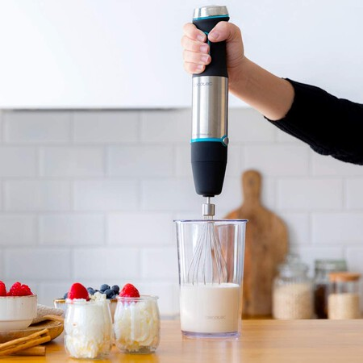

Una de las preparaciones más fáciles que está triunfando entre los amantes de la cúrcuma es el yogur natural con una cucharadita de aceite de coco, otra de cúrcuma en polvo y de pimienta negra molida.
Tiempo: 10 minutos + 1h de reposo.
Ingredientes para 1 bol
3 tazas de yogur de anacardos
1 cucharada de aceite de coco, de primera presión en frío
1 cucharadita de cúrcuma en polvo
Media cucharadita de pimienta negra molida
2 dátiles
Elaboración:
Paso 1. Introduce todos los ingredientes en una batidora y mézclalo todo hasta obtener una crema suave.

Paso 2. Reparte la masa obtenida en cuatro vasitos de vidrio con tapa y deja reposar en la nevera durante una hora, para que adquiera una textura aún más cremosa, si no dispones de vasitos con tapa, puedes usar un bol tapado con papel film.